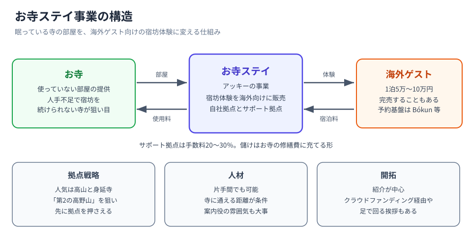

📌 要約
宿坊「お寺ステイ（OTERA STAY）」を営むアッキーが、事業の仕組みと拠点戦略をユウキに共有した2人の記録。寺の余っている部屋を使わせてもらい使用料を払う形で、狙い目は人手不足で宿坊を続けられなくなった寺。人気の高山と身延寺を先に押さえ「第2の高野山」を作る構想が中心で、後半はオーペアや保育料など子育ての実情と、LINE自動化コンサルやAIキャラ配信など仕事の近況に広がった。決定事項はなし。
話者レジェンド
| 色 | 話者 | 立場 | この会話での役割 |
|---|---|---|---|
| ● | ユウキ | Anime Sensei 主宰。ツアーガイド・民泊運営 | 聞き手。質問と相づちで話を引き出す |
| ● | アッキー（加藤明仁） | 宿坊ブランド「お寺ステイ（OTERA STAY）」事業者（株式会社シェアウィング代表取締役社長） | 語り手。事業の仕組みと近況を共有する |
本文の ユウキ アッキー の色チップが発言者を示す。★ は流し読み用の重要マーカー。
話題ごとの要点
1. 宿坊・民泊事業の仕組みアッキー
- アッキーお寺に「使っていない部屋で宿坊・民泊をやらせてほしい」と持ちかけ、寺の業務に支障が出ない範囲で部屋を使い、使用料を払う形。
- アッキー★お寺側への提案は「寝かせておくより、月数十万円入るほうがいい」。もともと宿坊をやっていたが人手不足で続けられなくなった寺が狙い目。
- アッキー営業先の開拓は紹介が中心。クラウドファンディング経由の連絡や、足を使って1軒ずつ挨拶して回る方法もある。「探して見つかるのは奇跡に近い」という実感も出た。
- アッキー東京の寺はほぼビジネスライクで、檀家を回るだけで収入がある、という話も出た。

2. 狙いのエリアと拠点戦略アッキー
- アッキー★人気は高山と身延寺。身延寺は日蓮宗の総本山でありながら世界にほとんど知られておらず、ポテンシャルが高い。「第2の高野山」を狙う。
- アッキー方針は、先に拠点を押さえて「人を呼べば儲かる」状態を固めてから攻める。競合に先に目を付けられないよう、拠点を増やしていく。
- アッキー収益性の例として相撲の朝稽古見学：外国人客1人あたり1万数千円、100人キャパで ★1日150万円ほど。寺の体験も同じ構図になりうる、という見立て。
3. 人材アッキー
- アッキースタッフは片手間でも可能。住み込みは不要だが、寺に通える距離である必要がある。
- アッキー欲しいのは、全国転勤OKの若い世代や、僧侶っぽい雰囲気でゲストを案内できる人材。
4. 子育てと暮らしの実情（雑談）アッキーユウキ
- アッキーオーペア（海外の若者が住み込みで家事・育児を手伝う、ベビーシッター版のウーフー）を利用している。レビューを見て受け入れを判断できるが、当たり外れはある。
- アッキー保育料は3歳まで高く、3歳から無料。金額は納税額によって変わる。
- アッキー会社のシッター券を使えば、★手出し約1,000円で2時間ほどシッターを頼める。
5. 仕事の近況アッキー
- アッキーLINE自動化のコンサル（1時間枠。翌日に3軒の予定）、セミナー、シェアハウスやAirbnbの運営。
- アッキーYouTubeは外注に加え、AIで作った自分のキャラクターによる配信も実施。1日1本の発信を続けている。
- アッキーAIに自分を取材させて、音声で知識を渡していく案も出た。
- アッキー★「一番欲しいものは時間」という一言があった。
6. 雑談ユウキアッキー
- 高山のグルメ（漁師漬け丼、海鮮丼、市場）。
- 2009年のアニサマ（Animelo Summer Live）のセットリスト談義。
- 日本酒や黒霧島のハイボールの注文など、食事中の会話らしい断片も多い。
決まったこと・TODO
- なし（事業の共有と近況報告が中心）。
bunko／tips化についての判断
- 本音源は、アッキーの事業ノウハウの口頭共有と、子育てなど私的な近況が中心で、公開用の読み物には向かない内容が多い。bunko原稿と共有用tipsは作らず、本議事録のみとする（公開・送信はもともとユウキ確認待ち）。
出典：文字起こし全文: m2 ~/VoiceMemoInbox/完成/2026-11-22_0744_宿坊事業と近況トーク/01-文字起こし.md（話者名の反映済み）
表記について: 文字起こしでは「三野寺」と出るが、日蓮宗の総本山という文脈から身延山久遠寺（身延寺）を指すとみられる。また「高山」と「高野山」が混在している箇所がある。